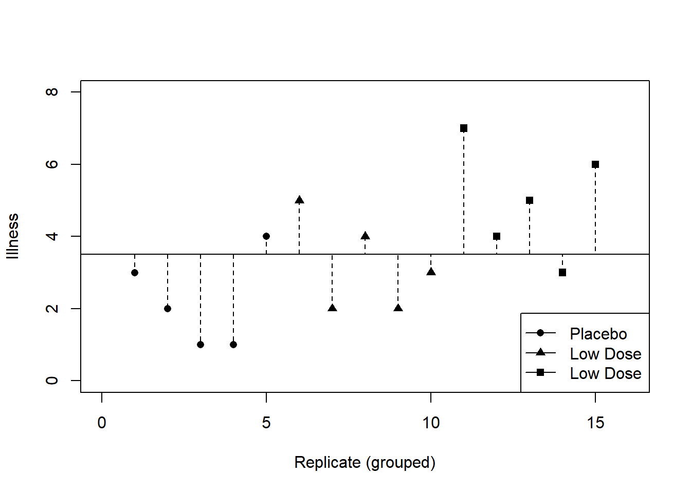
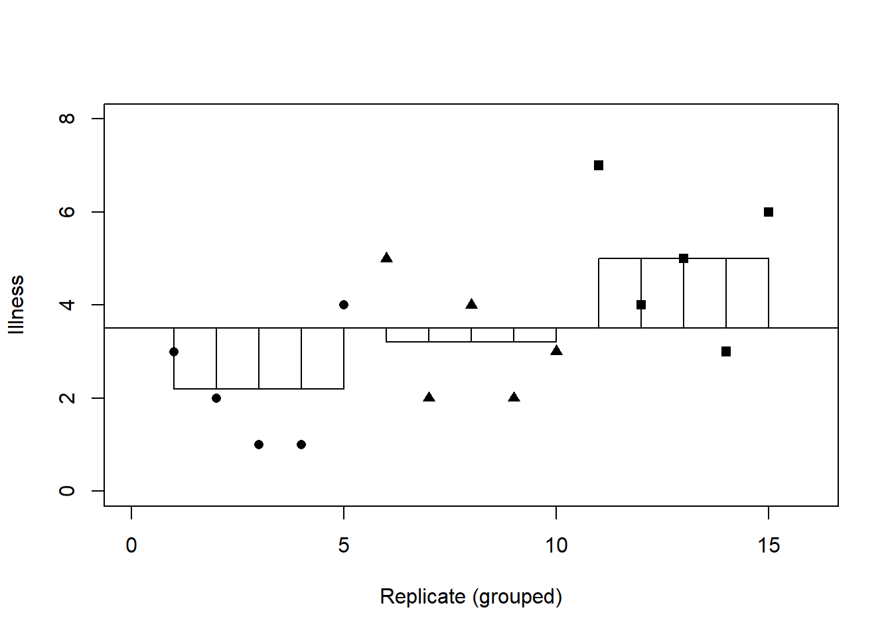

20 Analysis of Variance (ANOVA)
In this module we will understand the basic principles of ANOVA. We will be analyzing one-way ANOVA, also called ‘one-factor’ ANOVA or ‘single factor Analysis of Variance’. We will be analyzing the impact to the mean value among k groups, where \(k >2\). ANOVA is a parametric test.
We will stick with Zar’s terminology (p 178, 4th edition).
20.1 When and why to use ANOVA
When we want to compare means we can use a t-test but this test has limitations, we can only test the equality of two mean values. Often we would like to compare means from three or more groups.
The ANOVA is an extension of regression (and hence is a general linear model).
20.2 What Does ANOVA Tell Us?
Null hypothesis:
- Like a t-test, one way ANOVA tests the null hypothesis that the means are the same among groups.
ANOVA is an omnibus test:
- It test for an overall test for evaluating the equality of means among groups.
- It tells us that the group means are different.
- It doesn’t tell us which mean(s) differ.
20.3 ANOVA as Regression
Let us assume that we test three different medicine levels and want to see if it impacts (results in contrast, i.e. significant differences) the illness level in pigs.
We are going to test the effect of the three groups (k = 3), in this case medicine type. The three groups are ‘placebo’, ‘high’, and ‘low’.
The analysis is termed a one-factor test or one-way ANOVA (only a single thing, the medicine, is different).
Pigs are assigned, at random, to each of the three groups. These are the replicates of each group.
\(\mbox{illness}_i=b_0+b_1\mbox{low}_i+b_2\mbox{high}_i+\varepsilon_i\)
Here \(high\) and \(low\) are dummy variables, just like G in the t-test.
| Group | Dummy variable 1 (High) | Dummy variable 2 (Low) |
|---|---|---|
| Placebo | 0 | 0 |
| Low dose medicine | 0 | 1 |
| High dose medicine | 1 | 0 |
20.4 Placebo Group
\(\mbox{illness}_i=b_0+b_1\mbox{low}_i+b_2\mbox{high}_i+\varepsilon_i\)
\(\mbox{illness}_i=b_0+(b_1\times 0)+(b_2\times 0)\)
\(\mbox{illness}_i=b_0\)
\(\bar{Y}_{placebo}=b_0\)
20.5 Low Dose Group
\(\mbox{illness}_i=b_0+b_1\mbox{low}_i+b_2\mbox{high}_i+\varepsilon_i\)
\(\mbox{illness}_i=b_0+(b_1\times 1)+(b_2\times 0)\)
\(\mbox{illness}_i=b_0+b_1\)
\(\bar{Y}_{low}=\bar{Y}_{placebo}+b_1\)
\(b_1=\bar{Y}_{low}-\bar{Y}_{placebo}\)
20.6 High Dose Group
\(\mbox{illness}_i=b_0+b_1\mbox{low}_i+b_2\mbox{high}_i+\varepsilon_i\)
\(\mbox{illness}_i=b_0+(b_1\times 0)+(b_2\times 1)\)
\(\mbox{illness}_i=b_0+b_2\)
\(\bar{Y}_{high}= \bar{Y}_{placebo}+b_2\)
\(b_2=\bar{Y}_{high}-\bar{Y}_{placebo}\)
20.7 Output from Regression
| Coefficients: | Estimate | Std. Error | t value | Pr(> |
|---|---|---|---|---|
| (intercept) | 2.2000 | 0.6272 | 3.508 | 0.00432 ** |
| dummy 1 | 2.8000 | 0.8869 | 3.157 | 0.00827 ** |
| dummy 2 | 1.0000 | 0.8869 | 1.127 | 0.28158 |
Signif. Codes: 0 ‘’ 0.001 ’’ 0.01 ’’ 0.05’.’ 0.1 ’’ 1
- residual standard error: 1.402 on 12 degrees of freedom.
- Multiple R-squared: 0.4604, Adjusted R-squared: 0.3704
- F-statistic: 5.119 on 2 and 12 df, p-value: 0.02469
20.8 Theory of ANOVA
We use SS components:
First, we calculate how much variability there is between scores
- Total sum of squares (SST).
We then calculate how much of this variability can be explained by the model we fit to the data
How much variability is due to the experimental manipulation? This is evaluated using the model sum of squares (SSM)
How much variability is due to individual differences in performance, residual sum of squares (SSR).
We compare the amount of variability explained by the model (experiment), to the error in the model (individual differences)
This ratio is called the F-ratio.
If the model explains a lot more variability than it can’t explain, then the experimental manipulation has had a significant effect on the outcome.
20.9 ANOVA Worked Example
Testing the effects of medicine on illness using three groups:
- Placebo (sugar pill)
- Low dose medicine
- High dose medicine
The outcome/dependent variable (DV) was an objective measure of illness.
20.10 The Data
| Placebo | Low Dose | High Dose | |
|---|---|---|---|
| 3 | 5 | 7 | |
| 2 | 2 | 4 | |
| 1 | 4 | 5 | |
| 1 | 2 | 3 | |
| 4 | 3 | 6 | |
| \(\bar{Y}\) | 2.20 | 3.20 | 5.00 |
| s | 1.30 | 1.30 | 1.58 |
| s2 | 1.70 | 1.70 | 2.50 |
Grand Mean = 3.467, Grand s = 1.767, Grand s2 = 3.124
20.11 Step 1: Calculate SST
SST uses the differences between the observed data and the mean value of Y. Where the mean is the grand mean

| Placebo | Low Dose | High Dose | |
|---|---|---|---|
| 3 | 5 | 7 | |
| 2 | 2 | 4 | |
| 1 | 4 | 5 | |
| 1 | 2 | 3 | |
| 4 | 3 | 6 | |
| \(\bar{Y}\) | 2.20 | 3.20 | 5.00 |
| s | 1.30 | 1.30 | 1.58 |
| s2 | 1.70 | 1.70 | 2.50 |
Grand Mean = 3.467, Grand s = 1.767, Grand s2 = 3.124
SST = sum((observed - Grand mean)2) \(SS_T=\sum(obs_i - \bar{X}_{grand})\)
20.12 Degrees of Freedom
Degrees of freedom (df) are the number of values that are free to vary.
In general, the df are one less than the number of values used to calculate the SS.
dfTotal = N - 1
20.13 Model Sum of Squares (SSM)
Difference between the model estimate and the mean (or “Grand Mean”)

20.14 Step 2: Calculate SSM
\(SS_M=\sum n_i(\bar{x}_i - \bar{x}_{grand})^2\)
\(SS_M=5(2.2-3.467)^2+5(3.2-3.467)^2+5(5.0-3.467)^2\)
\(SS_M=5(-1.267)^2+5(-0.267)^2+5(1.533)^2\)
\(SS_M=8.025+0.355+11.755\)
\(SS_M=20.135\)
20.15 Model Degrees of Freedom
How many values did we use to calculate SSM?
- We used the 3 means.
\(df_M=k-1=3-1=2\)

20.17 Step 3: Calculate SSR
\(SS_R=\mbox{sum}([x_i-\bar{x}_i]^2)\)
\(SS_R=S^2_{group1}(n_1-1)+S^2_{group2}(n_2-1)+S^2_{group3}(n_3-1)\)
\(SS_R=1.70(5-1)+1.70(5-1)+2.5(5-1)\)
\(SS_R=(1.70\times4)+(1.70\times4)+(2.50\times4)\)
\(SS_R=6.8+6.8+10\)
\(SS_R=23.60\)
20.18 Residual Degrees of Freedom
How many values did we use to calculate SSR?
We used the 5 scores for each of the SS for each group.
\(df_R=df_{group1}+df_{group2}+df_{group3}\)
\(df_R=(n_1-1)+(n_2-1)+(n_3-1)\)
\(df_R=(5-1)+(5-1)+(5-1)\)
\(df_R=12\)
20.20 Step 4: Calculate the Mean Squared Error
\(MS_M=\frac{SS_M}{df_M}=\frac{20.135}{2}=10.067\)
\(MS_R=\frac{SS_R}{df_R}=\frac{23.60}{12}=1.967\)
20.21 Step 5: Calculate the F-Ratio
\(F=\frac{MS_M}{MS_R}\)
\(F=\frac{MS_M}{MS_R}=\frac{10.067}{1.967}=5.12\)
20.22 Step 6: Construct a Summary Table
| Source | SS | df | MS | F |
|---|---|---|---|---|
| Model | 20.14 | 2 | 10.067 | 5.12* |
| Residual | 23.60 | 12 | 1.967 | |
| Total | 43.74 | 14 |
20.23 Multiple-Comparison Tests
The ANOVA that you examined is used to test the hypothesis that there is no difference in the sample means among k treatment levels
However we cannot conclude, after doing the test, which of the mean values are different from one-another.
20.24 Tukey Test
Tukey test - balanced, orthogonal designs
Step 1: is to arrange and number all five sample means in order of increasing magnitude
Calculate the pairwise difference in sample means.
We use a t-test “analog” to calculate a q-statistic
S2 is the error mean square by ANOVA computation
n is the of data in each of groups B and A
Remember this is a completely balanced design.
\(SE=\sqrt{\frac{s^2}{n}}\)
\(q=\frac{\bar{Y}_B-\bar{Y}_A}{SE}\)
Start with the largest mean, vs. the smallest mean. Then when the first largest mean has been compared with increasingly large second means, use the second largest mean.
If the null hypothesis is accepted between two means then all other means within that range cannot be different.